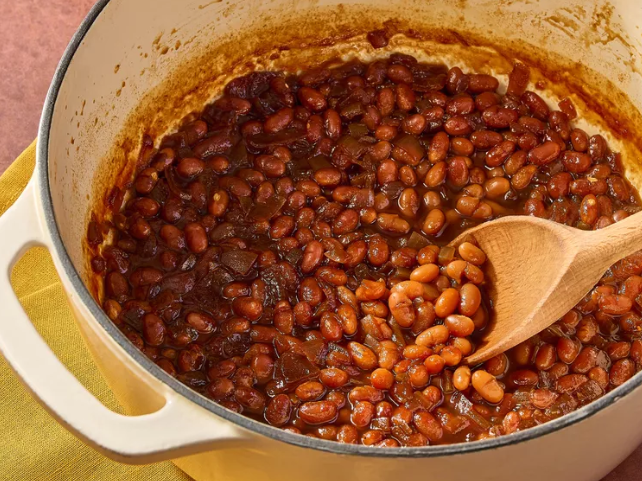

Baked Beans

Description
These baked beans from scratch are made by combining navy beans, molasses, and maple syrup to make this classic dish at home
Ingredients
- 1 cup navy beans, soaked overnight and drained
- 4 cups water
- ¼ cup ketchup
- 1 small onion, chopped
Steps
- Place beans in a large saucepan with 4 cups of water. Bring to a boil over high heat, then reduce heat to medium-low, cover, and simmer 1 hour
- Preheat the oven to 375 degrees F (190 degrees C). Stir ketchup
- Once beans have simmered for 1 hour, drain, and reserve cooking liquid
- Cover and bake in the preheated oven for 10 minutes
Home